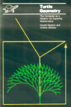
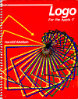
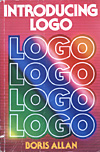
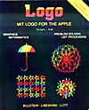
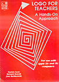
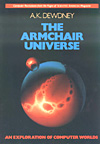
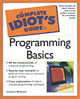
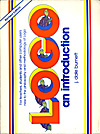
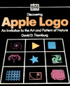
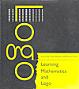

|  |
Turtle Geometry
Harold Ableson and Andrea diSessa
ISBN 0-262-51037-5
(1980)
More involved maths of turtle geometry; topology, 3D surfaces
and space-time relativity. |
|  |
Logo For The Apple II
Harold Ableson
ISBN 0-07-000426-9
(1982)
Logo procedures and projects, recursion, lists and interactivity. |
|  |
Introducing Logo
Boris Allan
ISBN 0-246-12323-0 (1984)
Basic concepts of the Logo programming language, including
code examples. |
|  |
MIT Logo For The Apple
Billstein/Libeskind/Lott
ISBN 0-8053-0860-1
(1985)
Simple Logo graphics and maths procedures. |
 |
Computer Science Logo Style
Brian Harvey
ISBN 0-262-58080-2
(1986)
Collection of Logo projects, illustrating good programming
techniques. |
|  |
Logo For Teachers
Scott/Howell/ Rachkowski
ISBN 0-673-18291-6
(1986)
Simple Logo graphic, recursion and list procedures suitable
for classroom activity. |
|  |
The Armchair Universe
A.K. Dewdney
ISBN 0-7167-1939-8 (1988)
An exploration of computer worlds; infinite graphics,
games and automata. |
|  |
Complete Idiots Guide To Programming Basics
Clayton Walnum
ISBN 0-02-864286-4
(2002)
Easy to read guide to using Q-Basic on a PC, and OOP's
using Visual Basic. |
|
|  |
Logo An Introduction
J Dale Burnett
ISBN 0-916688-39-9
(1982)
Collection of simple programming exercises for children. |
|  |
Discovering Apple Logo
David D Thornburg
ISBN 0-201-07769-8
(1983)
Turtle geometry programs and patterns. |
 |
Advanced Logo
Michael Friendly
ISBN 0-8058-0074-3
(1987)
Logo as a language for learning; representing knowledge,
exploring language and maths. |
 |
Computer Science Logo Style Volume 1
Brian Harvey
ISBN 0-262-58072-1
(1985)
Introduction to Logo, turtle geometry and programming
tips & techniques. |
 |
Geometric and Artistic Graphics
Jean-Paul Delahaye
ISBN 0-333-41799-2
(1986)
Series of microcomputer generated designs with code listings;
polygons, curves and fractals. |
 |
The Homerton Logo Manual
Hilary Shuard, Fred Daly
ISBN 0-521-33723-2 (1987)
Basic general introduction to
Logo programming, variables, lists etc. |
 |
The Magic Machine
A.K. Dewdney
ISBN 0-7167-2144-9 (1990)
A handbook of computer sorcery; chaos, machines, and mazes. |
|  |
Learning Mathematics and Logo
Celia Hoyles / Richard Noss
ISBN 0-262-08207-1
(1992)
Collection of Logo tutorials and essays. |
|